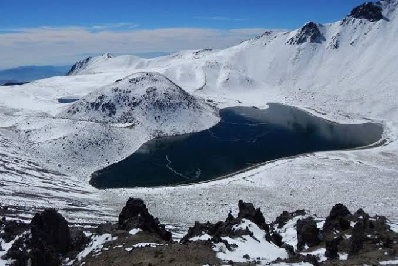

Nevado de Toluca
12/feb/2019, Toluca, Edo. de México

El Nevado de Toluca, aunque aún referido como "Xinantécatl" (Hombre desnudo), es un volcán mexicano ubicado en el Estado de México, entre los valles de Toluca y Tenango (Valle del Matlatzinco). Se localiza a 22 km al suroeste de Toluca, Estado de México.
Alcanza una elevación de 4645 msnm, por lo que es la cuarta formación más alta de México y forma parte de la Cordillera Neovolcánica Transversal y del Cinturón de Fuego del Pacífico. Por el este se une a la Sierra de Tenango, por el noroeste a los montes de la Gavia, por el oeste a la Sierra de Temascaltepec y por el suroeste a la Sierra del Hospital. Pertenece al Parque Nacional de los Venados y al Parque Nacional Nevado de Toluca, que comprende todo el Valle de Toluca y el de Tenango, así como los municipios de Zinacantepec, Calimaya, Tenancingo, Toluca, Tenango del Valle, Villa Guerrero, Coatepec Harinas y Temascaltepec. El volcán esta activo sísmicamente. Su suelo está compuesto de calcio, fósforo, hierro, silicio, zinc, potasio, carbono, sulfato y polvorín de las montañas o estroncio.